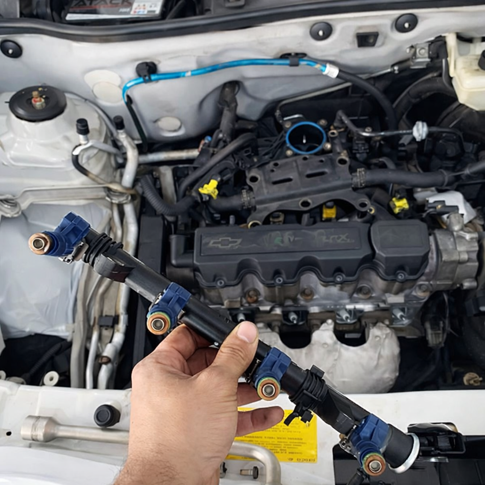
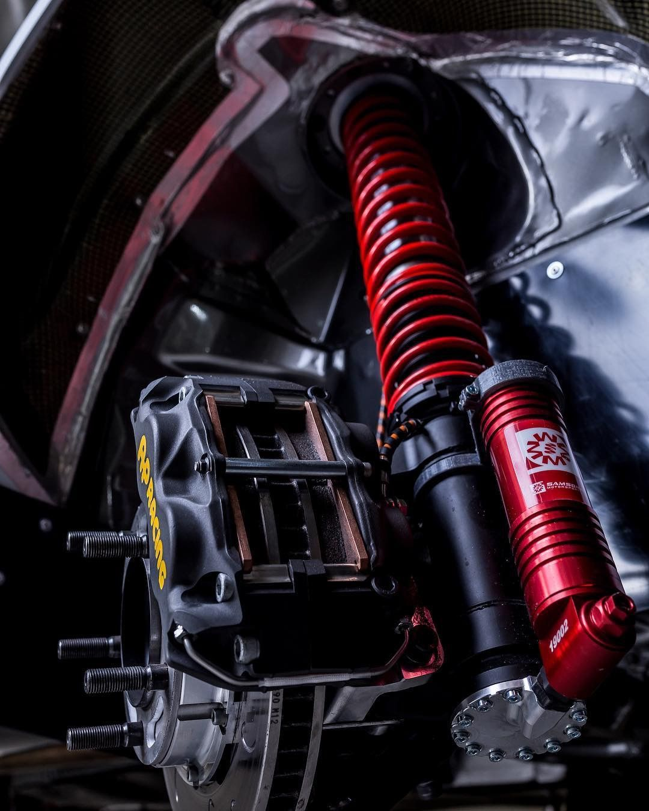
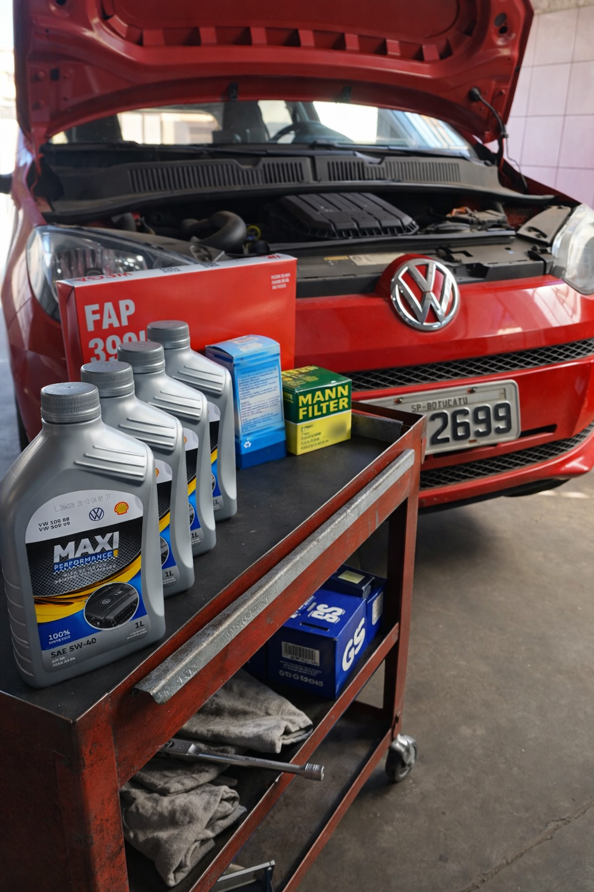
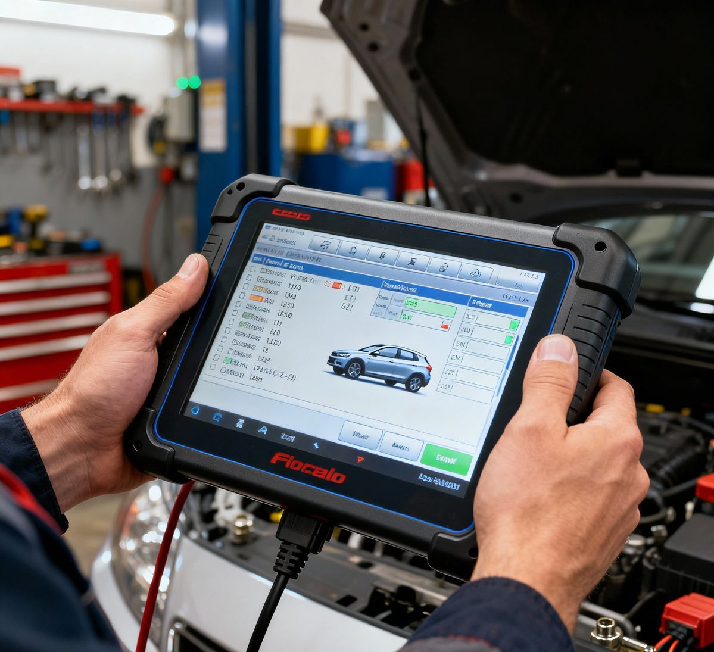
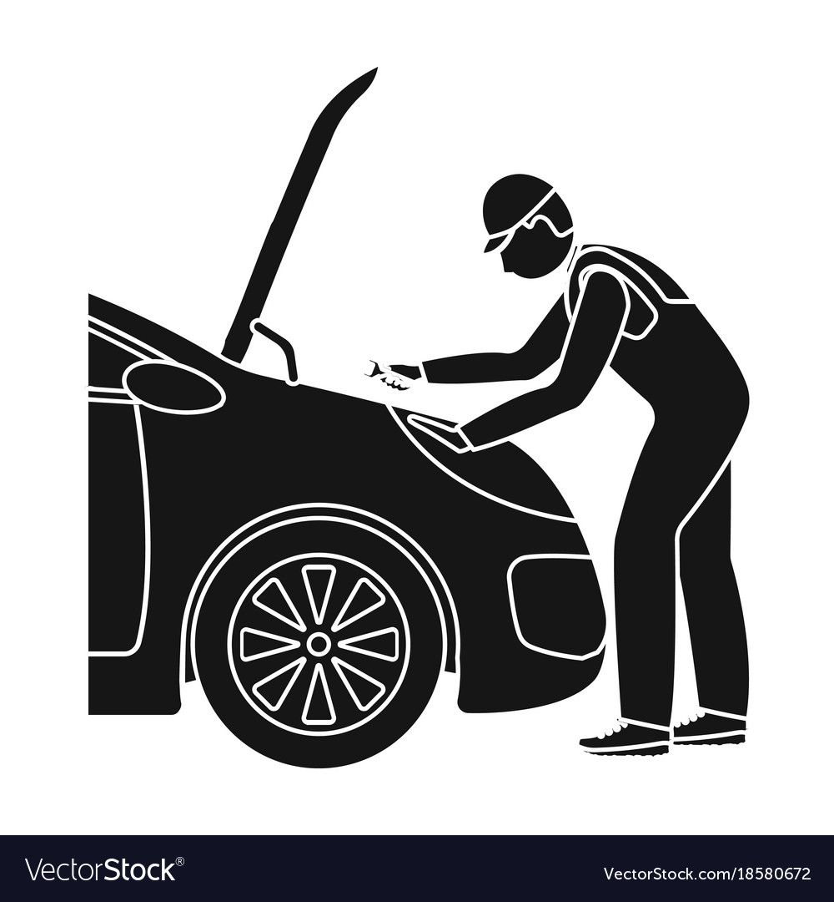
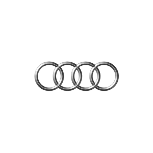
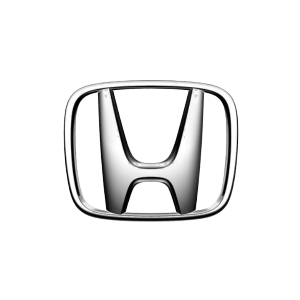

🔧 Injeção Eletrônica
Diagnóstico e reparo preciso.
Tecnologia, experiência e confiança em cada reparo.
Solicitar orçamento
Diagnóstico e reparo preciso.

Estabilidade e segurança total.

Proteção e vida ao motor.

Leitura e reset de falhas.

Diagnóstico e reparo completo de motores e câmbios.

Assistência Automotiva


📍 Botucatu - SP